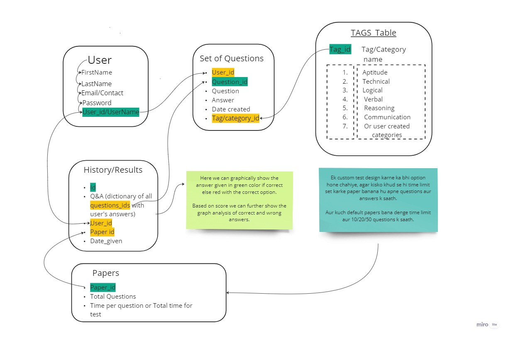

{% load static %}
ABOUT US
This is the Task Page now, click
HOME Page
to open
Tasks
Profile page
About us page
Quiz Page
Dashboard
HIT ME 4 a Surprise
BACK 🤣 😒🤔
If you are on this page, then you must remember database banana hai abhi...
Schema
